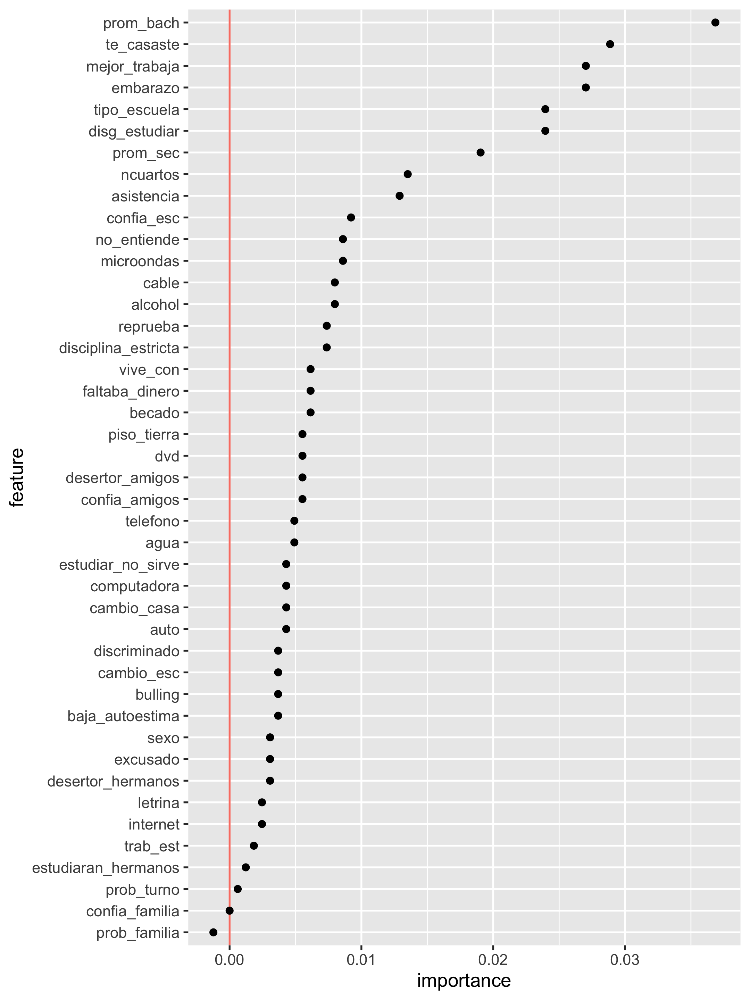

5 Interpretación del Modelo
Como se menciona en las notas del curso, Clase 15 Interpretación de modelos, buscamos responder ¿Cuánto contribuye cada variable al desempeño predictivo del modelo?. Para dar respuesta a esta pregunta se recurre a la idea de importancia basadas en permutaciones. En la cual se realiza el ajuste del modelo con un conjunto de entrenamiento y se toma un conjunto de datos de validación. En cada variable del modelo se realiza lo siguiente:
- Permutamos la variable en el conjunto de validación
- Hacemos predicciones con nuestro predictor
- Evaluamos el error de predicción
- Obtenemos la diferencia del error de predicción con las variables no permutadas A esta diferencia le llamamos importancia de la variable bajo el método de permutaciones.
pred_iml <- function(model, newdata){
predict(model, new_data = newdata) %>% pull(.pred_class)
}
predictor <- Predictor$new(model = flujo_fit, data = encuesta_test,
y = "desertor", predict.fun = pred_iml)vars_usadas <- extract_preprocessor(flujo_fit) %>% pluck("var_info") %>%
filter(role == "predictor") %>%
pull(variable)
imp_boosting <- FeatureImp$new(predictor, loss = "ce",
compare = "difference", n.repetitions = 5, features = vars_usadas)
importancias <- imp_boosting$results %>%
mutate(feature = fct_reorder(feature, importance))
ggplot(importancias, aes(x = feature, y = importance)) +
geom_hline(yintercept = 0, colour = "salmon") +
geom_point() + coord_flip()
importancias## feature importance.05 importance importance.95
## 1 edo 0.0357493857 0.0448402948 0.0481572482
## 2 prom_bach 0.0259213759 0.0282555283 0.0351351351
## 3 te_casaste 0.0214987715 0.0257985258 0.0302211302
## 4 disg_estudiar 0.0148648649 0.0233415233 0.0253071253
## 5 prom_sec 0.0100737101 0.0178132678 0.0230958231
## 6 embarazo 0.0119164619 0.0153562654 0.0181818182
## 7 mejor_trabaja 0.0126535627 0.0147420147 0.0197788698
## 8 tipo_escuela 0.0120393120 0.0147420147 0.0153562654
## 9 cambio_esc 0.0039312039 0.0073710074 0.0088452088
## 10 desertor_hermanos 0.0057739558 0.0073710074 0.0109336609
## 11 computadora 0.0020884521 0.0073710074 0.0104422604
## 12 discriminado 0.0050368550 0.0067567568 0.0073710074
## 13 baja_autoestima 0.0012285012 0.0055282555 0.0085995086
## 14 no_entiende 0.0028255528 0.0049140049 0.0066339066
## 15 reprueba 0.0033169533 0.0042997543 0.0074938575
## 16 auto 0.0013513514 0.0042997543 0.0052825553
## 17 confia_amigos 0.0004914005 0.0042997543 0.0054054054
## 18 becado 0.0031941032 0.0036855037 0.0097051597
## 19 faltaba_dinero 0.0011056511 0.0036855037 0.0062653563
## 20 excusado 0.0025798526 0.0036855037 0.0042997543
## 21 asistencia -0.0011056511 0.0030712531 0.0087223587
## 22 desertor_amigos 0.0002457002 0.0030712531 0.0047911548
## 23 agua 0.0013513514 0.0030712531 0.0040540541
## 24 vive_con 0.0011056511 0.0030712531 0.0068796069
## 25 disciplina_estricta -0.0027027027 0.0024570025 0.0044226044
## 26 estudiar_no_sirve 0.0009828010 0.0024570025 0.0040540541
## 27 alcohol -0.0011056511 0.0024570025 0.0099508600
## 28 bulling 0.0003685504 0.0018427518 0.0029484029
## 29 estudiaran_hermanos 0.0001228501 0.0018427518 0.0023341523
## 30 querias_cambiar_escuela -0.0013513514 0.0018427518 0.0023341523
## 31 trab_est 0.0013513514 0.0018427518 0.0054054054
## 32 ncuartos -0.0022113022 0.0018427518 0.0042997543
## 33 piso_tierra 0.0007371007 0.0018427518 0.0040540541
## 34 microondas -0.0015970516 0.0018427518 0.0034398034
## 35 marihuana 0.0001228501 0.0018427518 0.0023341523
## 36 sec_publica -0.0017199017 0.0012285012 0.0038083538
## 37 prob_turno 0.0001228501 0.0012285012 0.0039312039
## 38 cambio_casa 0.0006142506 0.0006142506 0.0023341523
## 39 prob_familia -0.0011056511 0.0006142506 0.0017199017
## 40 dvd -0.0024570025 0.0006142506 0.0006142506
## 41 refri 0.0000000000 0.0006142506 0.0029484029
## 42 confia_esc -0.0035626536 0.0000000000 0.0004914005
## 43 otras_drogas -0.0011056511 0.0000000000 0.0014742015
## 44 telefono -0.0041769042 -0.0006142506 0.0025798526
## 45 tabaco -0.0036855037 -0.0006142506 0.0011056511
## 46 estufa -0.0027027027 -0.0012285012 0.0028255528
## 47 confia_familia -0.0033169533 -0.0012285012 0.0031941032
## 48 tele -0.0023341523 -0.0018427518 -0.0002457002
## 49 internet -0.0033169533 -0.0018427518 0.0017199017
## 50 cable -0.0030712531 -0.0018427518 0.0025798526
## 51 lavadora -0.0030712531 -0.0024570025 0.0003685504
## 52 letrina -0.0029484029 -0.0024570025 0.0023341523
## 53 sexo -0.0040540541 -0.0030712531 0.0006142506
## permutation.error
## 1 0.2143735
## 2 0.1977887
## 3 0.1953317
## 4 0.1928747
## 5 0.1873464
## 6 0.1848894
## 7 0.1842752
## 8 0.1842752
## 9 0.1769042
## 10 0.1769042
## 11 0.1769042
## 12 0.1762899
## 13 0.1750614
## 14 0.1744472
## 15 0.1738329
## 16 0.1738329
## 17 0.1738329
## 18 0.1732187
## 19 0.1732187
## 20 0.1732187
## 21 0.1726044
## 22 0.1726044
## 23 0.1726044
## 24 0.1726044
## 25 0.1719902
## 26 0.1719902
## 27 0.1719902
## 28 0.1713759
## 29 0.1713759
## 30 0.1713759
## 31 0.1713759
## 32 0.1713759
## 33 0.1713759
## 34 0.1713759
## 35 0.1713759
## 36 0.1707617
## 37 0.1707617
## 38 0.1701474
## 39 0.1701474
## 40 0.1701474
## 41 0.1701474
## 42 0.1695332
## 43 0.1695332
## 44 0.1689189
## 45 0.1689189
## 46 0.1683047
## 47 0.1683047
## 48 0.1676904
## 49 0.1676904
## 50 0.1676904
## 51 0.1670762
## 52 0.1670762
## 53 0.1664619Lineamientos para la elaboración de indicadores educativos↩︎